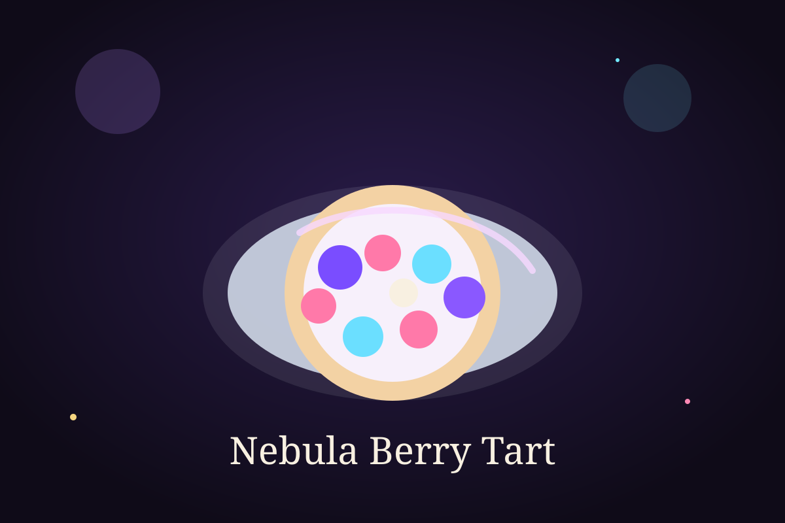

Time Module

Ingredient Vault
Ingredients
- 200 g biscuit crumbs
- 80 g melted butter
- 1 cup cream cheese
- 1/2 cup thick yogurt or whipped cream
- 3 tablespoons sugar
- 1 teaspoon vanilla essence
- 1 cup mixed berries
- 1 tablespoon berry jam or glaze
Cooking Sequence
Step-by-step instructions
- Mix the biscuit crumbs with melted butter until the texture is even.
- Press the mixture into a tart dish and chill it to form the crust.
- In a bowl, beat cream cheese, yogurt or whipped cream, sugar, and vanilla.
- Spread the filling over the chilled crust smoothly.
- Arrange the mixed berries on top in a neat pattern.
- Brush lightly with berry jam or glaze for a shiny finish.
- Chill again before slicing and serving.